Թեստ 16
30:00
1. «Ճանապարհային երթևեկության անվտանգության ապահովման մասին» ՀՀ օրենքի համաձայն` կանգառ է համարվում`
2. Երթևեկության սկիզբ է համարվում
3. Տրանսպորտային միջոցների շահագործումն արգելվում է, եթե`
4. Տրանսպորտային միջոցների շահագործումն արգելվում է, եթե՝
5. Ո՞ր տրանսպորտային միջոցի վարորդն է ճիշտ կատարում հետադարձը:
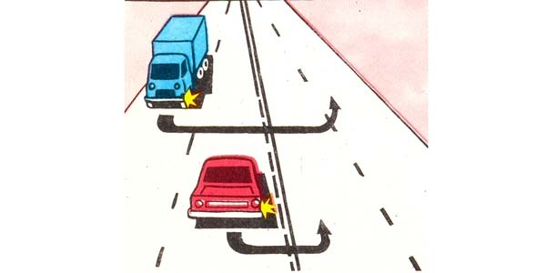
6. Հետևյալ նշաններից ո՞րն է պահանջում զիջել ճանապարհը հանդիպակաց երթևեկող տրանսպորտային միջոցներին:
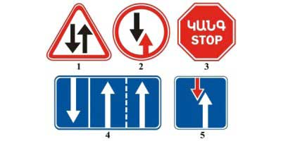
7. Տվյալ իրադրությունում նշանից 200 մ հեռավորության վրա վարորդն ունի՞ արդյոք հետադարձի իրավունք:
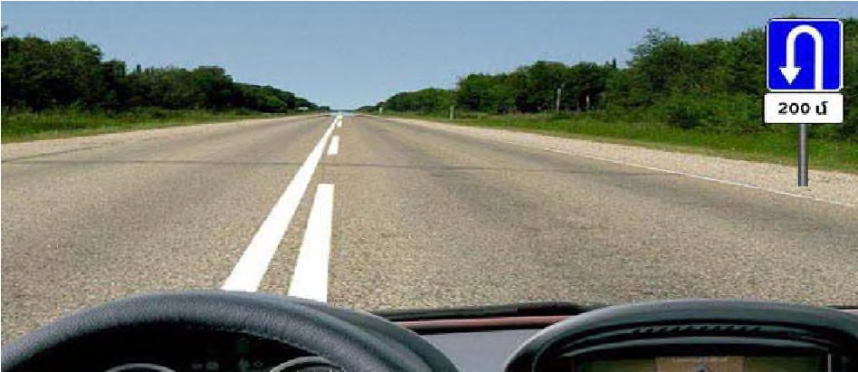
8. Ո՞ր տրանսպորտային միջոցի վարորդը պետք է զիջի ճանապարհը:
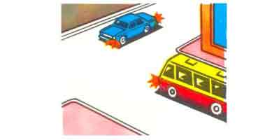
9. Ձախ բակ մուտք գործելիս ո՞ւմ պետք է զիջել ճանապարհը
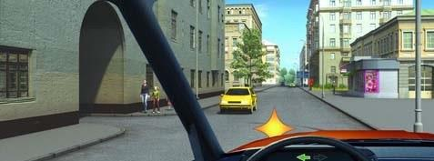
10. Բեռնատարից առաջ անցնելուց հետո ո՞ր գոտով կարող եք շարունակել երթևեկությունը
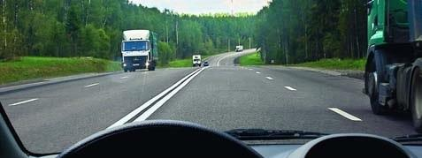
11. Այս դեպքում նվազագույնը որքա՞ն հետո կարող է հանդիպել հավասարազոր խաչմերուկը
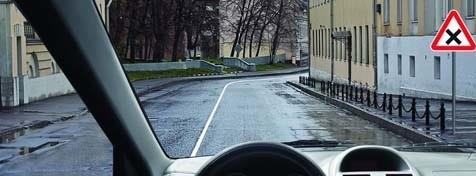
12. «Շրջանաձև երթևեկություն» նշանով կահավորված շրջանաձև երթևեկությամբ խաչմերուկ մուտք գործելիս տրանսպորտային միջոցի վարորդը
13. Այս իրավիճակում ձախ շրջադարձ կատարելիս
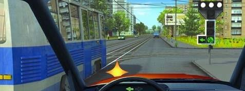
14. Տվյալ իրադրությունում ավտոբուսի վարորդն ունի՞ ուղիղ երթևեկելու իրավունք:
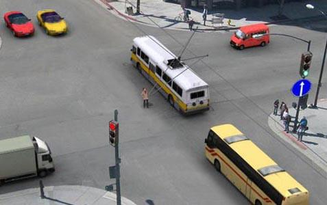
15. Թույլատրվու՞մ է, կանոնավոր ուղևորափոխադրումներ իրականացնող ավտոբուսի վարորդին ուղևորներ նստեցնելու նպատակով կանգառ կատարել նշված վայրում:
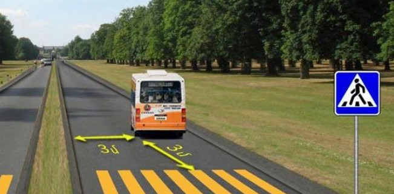
16. Ի՞նչ առավելագույն արագությամբ կարող է երթևեկել միջքաղաքային ավտոբուսի վարորդը տվյալ իրավիճակում:
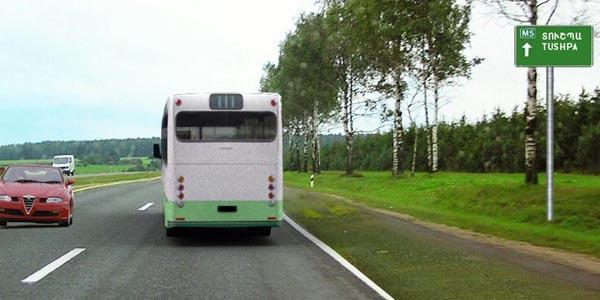
17. Թույլատրվու՞մ է արդյոք երկաթուղային գծանցով փոխադրել գյուղատնտեսական, ճանապարհային, շինարարական և այլ մեքենաներ ու մեխանիզմներ:
18. Նշված վայրերից որտե՞ղ կարելի է կայանում կատարել
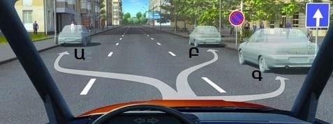